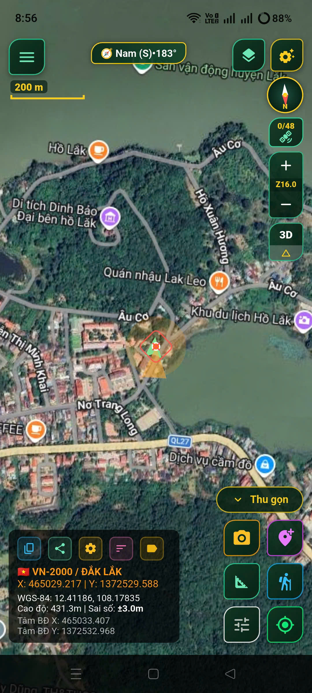
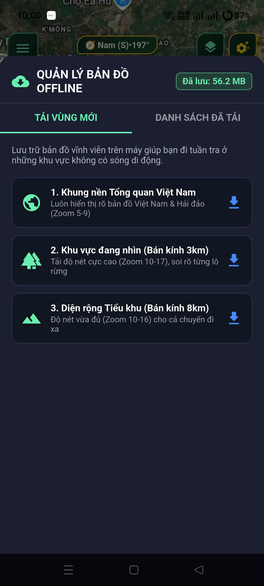
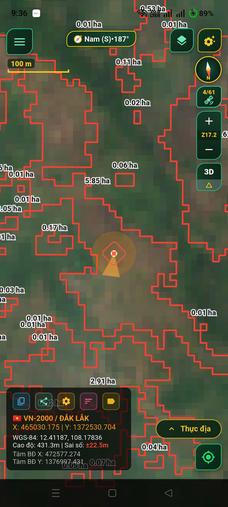
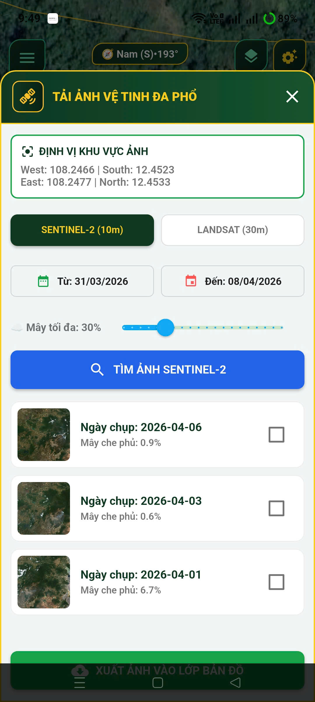
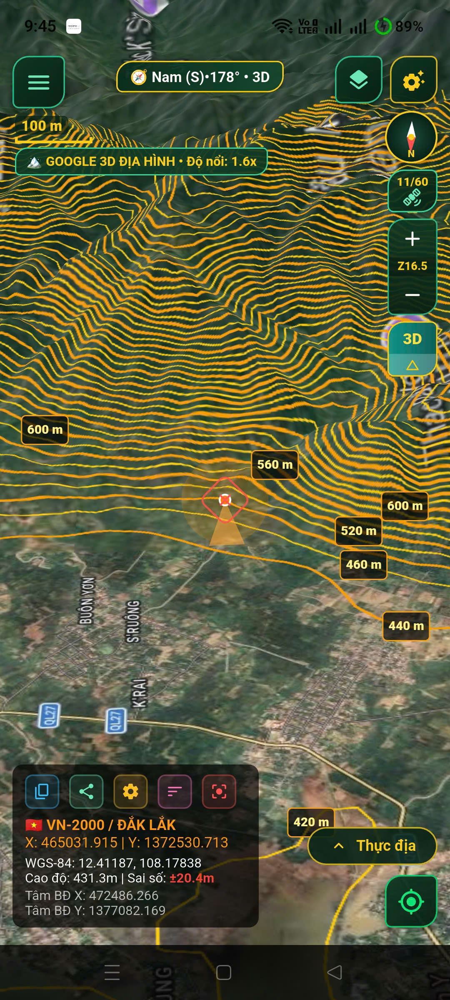
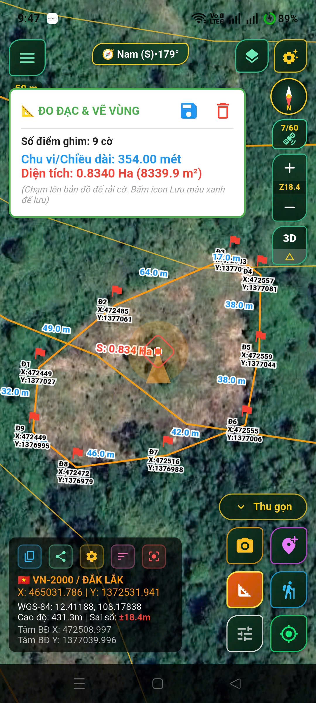
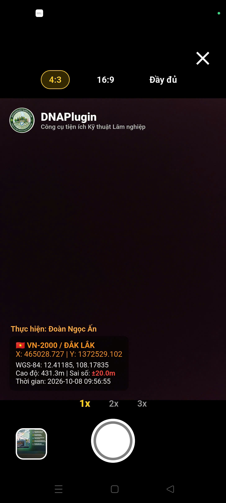

1 Thực tế gian nan của công tác tuần tra, kiểm tra rừng ngoài hiện trường
Trong công tác quản lý, bảo vệ rừng và giám sát hoạt động lâm sinh, cán bộ hiện trường luôn phải đối mặt với ba rào cản kỹ thuật lớn: mất sóng viễn thông hoàn toàn khi đi sâu vào các tiểu khu vùng lõi, sự phức tạp của các định dạng tệp bản đồ chuyên ngành và sai lệch hệ quy chiếu tọa độ.
Hầu hết các cơ sở dữ liệu bản đồ ngành Lâm nghiệp tại Việt Nam (như bản đồ diễn biến rừng, bản đồ quy hoạch 3 loại rừng, bản đồ giao khoán bảo vệ rừng hay thiết kế dự án lâm sinh) đều được lưu trữ dưới định dạng .TAB của MapInfo, .SHP của ArcGIS/QGIS hoặc .DGN của MicroStation trên hệ tọa độ phẳng VN-2000 (với kinh tuyến trục riêng cho từng tỉnh). Khi đưa các tệp này lên các ứng dụng bản đồ đại chúng trên điện thoại, cán bộ kỹ thuật thường xuyên gặp tình trạng lệch vị trí hàng trăm mét, không hiển thị được nhãn phân số (Lô/Khoảnh/Tiểu khu) hoặc toàn bộ tên chủ rừng, trạng thái rừng bị biến thành các ký tự lỗi phông chữ (TCVN3, VNI-Windows) không thể đọc được.


2 DNAPlugin – Giải pháp GIS thực địa "May đo" riêng cho ngành Lâm nghiệp Việt Nam
Xuất phát từ chính thực tiễn tuần tra bảo vệ rừng và nghiệp vụ kỹ thuật lâm sinh, tác giả Đoàn Ngọc Ấn đã nghiên cứu và phát triển ứng dụng DNAPlugin trên nền tảng di động. Không giống các phần mềm xem bản đồ thông thường, DNAPlugin tích hợp nhân giải mã dữ liệu không gian trực tiếp giúp mở tức thì các tệp bản đồ nặng hàng chục nghìn lô rừng mà không cần chuyển đổi định dạng qua máy tính.
⚡ 5 Đột phá kỹ thuật cốt lõi trên DNAPlugin
.TAB, .SHP, .DGN, .MBTiles, .GeoJSON, .KML/KMZ, .GPX, .TIF ngay trên điện thoại.Đặc biệt, tính năng Bộ lọc dữ liệu 2 cấp và Chuẩn hóa ngôn ngữ tiếng Việt cho phép người dùng chỉ với một chạm đã có thể lọc riêng từng Tiểu khu, từng Khoảnh hoặc từng Chủ quản lý để tô màu ranh giới nổi bật trên nền ảnh vệ tinh hoặc bản đồ địa hình.
3 Giám sát biến động rừng bằng Vệ tinh Sentinel-2 và Mô hình Địa hình 3D
Đối với các Ban quản lý rừng diện tích lớn hoặc các Hạt Kiểm lâm phụ trách địa bàn hiểm trở, việc phát hiện sớm các điểm nghi ngờ mất rừng hoặc lấn chiếm đất lâm nghiệp là ưu tiên hàng đầu. DNAPlugin tích hợp công cụ truy xuất ảnh vệ tinh Sentinel-2 theo chuỗi thời gian thực và thuật toán phân tích chỉ số thực vật, giúp khoanh vùng nhanh các vị trí có biến động độ che phủ rừng giữa hai kỳ ảnh để cán bộ đi kiểm tra đúng trọng tâm.



Bên cạnh đó, chế độ Mô hình 3D địa hình kết hợp cùng la bàn số và thước đo khoảng cách – góc phương vị giúp tổ tuần tra quan sát trực quan độ dốc, hướng phơi của sườn núi, khe suối trước khi băng rừng, giảm thiểu rủi ro và tiết kiệm tối đa thời gian di chuyển.
4 Thiết kế Dự Án Lâm Sinh, Đo đạc & Xuất bản đồ Trích lục PDF ngay tại rừng
Không chỉ dừng lại ở việc xem bản đồ và dẫn đường, DNAPlugin còn là một công cụ đo vẽ và lập hồ sơ nội nghiệp hoàn chỉnh ngay tại thực địa. Cán bộ kỹ thuật có thể đi vòng quanh lô rừng mới trồng, khu vực khai thác hoặc diện tích bị tác động để đo đạc diện tích tự động tính bằng Hecta (ha), thiết kế Dự Án Lâm Sinh, ghi nhận tuyến tuần tra (Tracklog) và chụp ảnh hiện trường đóng dấu sẵn tọa độ VN-2000, độ cao, sai số GPS cùng góc hướng nhìn.


Ngay sau khi đo vẽ xong ngoài hiện trường, người dùng có thể mở công cụ Trích lục bản đồ tích hợp sẵn trong ứng dụng để tự động dàn trang bản đồ khổ giấy A4 (đầy đủ lưới chiếu tọa độ VN-2000, kim chỉ nam, thước tỷ lệ, bảng kê tọa độ các điểm góc ranh giới, khung chú dẫn và ô chữ ký) rồi xuất trực tiếp ra tệp PDF chất lượng cao để gửi báo cáo nhanh về đơn vị qua Zalo hoặc in ấn ký duyệt.
“Mục tiêu lớn nhất của DNAPlugin là giúp mỗi người lính Kiểm lâm, mỗi cán bộ bảo vệ rừng và kỹ sư lâm sinh làm chủ hoàn toàn dữ liệu bản đồ số ngay trong lòng bàn tay — đơn giản, chính xác và hoạt động bền bỉ ở những cánh rừng sâu không có sóng điện thoại.”
5 Giải pháp tối ưu cho từng lực lượng trong ngành Lâm nghiệp
Lực lượng Kiểm lâm
- Xác minh nhanh vị trí vi phạm thuộc Lô, Khoảnh, Tiểu khu, loại rừng và chủ quản lý nào tại hiện trường.
- Đo tính ngay diện tích rừng bị thiệt hại và xuất Bản đồ trích lục PDF kèm bảng tọa độ VN-2000 phục vụ lập biên bản.
- Theo dõi cảnh báo biến động rừng qua ảnh vệ tinh Sentinel-2.
Ban QLR & Bảo vệ rừng
- Ghi lại tuyến đường tuần tra (Tracklog) ngoại tuyến và chụp ảnh hiện trường gắn tọa độ làm minh chứng tuần tra.
- Quản lý ranh giới giao khoán bảo vệ rừng với cộng đồng thôn/buôn rõ ràng, tránh chồng lấn đất canh tác.
- Chia sẻ nhanh điểm nóng hoặc vị trí tuần tra giữa các trạm qua file GPX/KML.
Công ty Lâm nghiệp & Lâm sinh
- Thiết kế ngoại nghiệp Dự Án Lâm Sinh, đo vẽ nghiệm thu diện tích trồng rừng, chăm sóc và khai thác rừng trồng.
- Đồng bộ dữ liệu hai chiều mượt mà với bộ công cụ DoanNgocAnPlugin trên phần mềm QGIS máy tính.
- Chuẩn hóa đồng bộ phông chữ tiếng Việt cho toàn bộ hồ sơ bản đồ cũ.